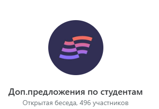

Чат «Доп.предложения по студентам»
Когда писать в чат, как оформить предложение и что делать после откликов преподавателей

Зачем нужен чат
- Создан чат со всеми преподавателями с названием «Доп.предложения по студентам».
- Если по заданным критериям в ЛК вы не можете найти подходящего преподавателя для студента по графику или по курсу — не пишите методистам. Отправьте в этот чат полноценное предложение с полной информацией о студенте и попросите откликнуться того, кто готов взять ученика, открыть под него нужные часы и вести указанный курс.
Шаблон сообщения
Скопируйте структуру ниже и подставьте данные студента. В конце обязательно попросите откликнуться в треде.
После публикации
-
Преподаватели откликаются и сообщают, что возьмут ученика и готовы открыть под него часы. Проверьте, что у преподавателя открыт набор, заявлен нужный курс и уровень. Если набор закрыт или курс не отмечен — подождите других откликов или спросите одобрения у методиста-куратора.
-
Продолжение согласования деталей ведите отдельно с преподавателем из аккаунта «Новые студенты».
-
Если откликнулось несколько преподавателей — выберите того, кто больше понравится ученику. После подтверждения студентом вернитесь в тред и напишите, что предложение закрыто.
Совет: Чем полнее описание в первом сообщении, тем быстрее преподаватель поймёт, подходит ли ему студент.